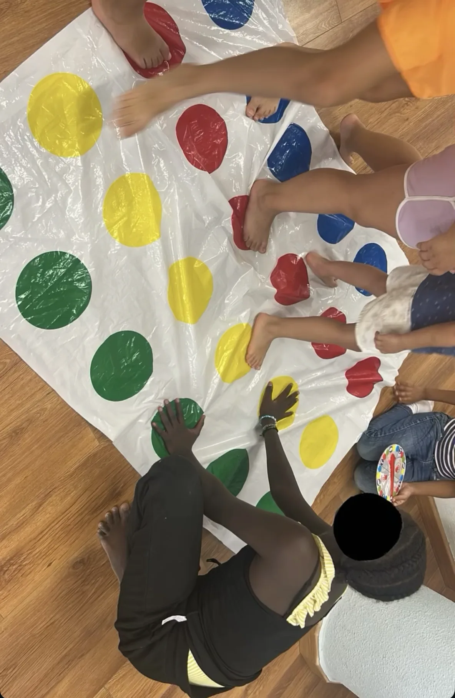

Convertim necessitats del territori en projectes educatius i comunitaris.
Treballem amb administracions, serveis públics i equipaments per dissenyar, coordinar i desenvolupar respostes adaptades a cada realitat local.

Quan una necessitat demana alguna cosa més que una activitat
- Analitzem el context i les necessitats detectades.
- Definim objectius, metodologia i organització.
- Connectem professionals, serveis i agents del territori.
On podem construir una resposta conjunta
Quina part del projecte necessiteu que assumim?
L'abast exacte s'acorda conjuntament, segons la necessitat i els recursos disponibles.
- Anàlisi i disseny
Necessitats, persones destinatàries, objectius, metodologia i organització.
- Coordinació i organització
Professionals, equipaments, entitats, calendari i seguiment.
- Desenvolupament i acompanyament
Programes, suport educatiu, materials i coordinació diària.
- Seguiment i aprenentatge
Dades, revisió, memòries i transferència.
Quatre passos per començar
La primera reunió serveix per valorar l'encaix i orientar una possible resposta.
- Compartiu la necessitat
Primera conversa sobre el context i el repte.
- Definim l'abast
Persones destinatàries, objectius i necessitats.
- Preparem la proposta
Metodologia, organització i calendari.
- Acordem els passos
Coordinació, desenvolupament i seguiment.
Teniu una necessitat educativa, social o comunitària?
Compartiu-ne el context i en una primera conversa valorarem com estructurar una resposta adaptada.